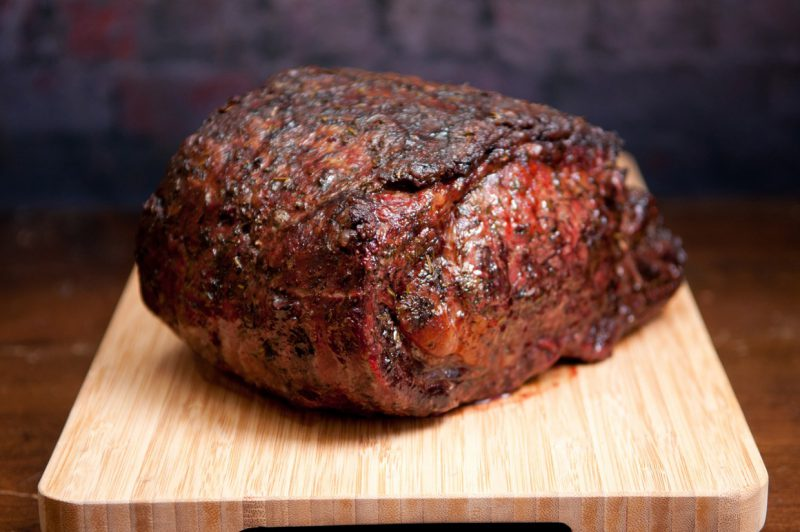

God-tier Rib-eye Steak

Cooking a good piece of meat is considered an art form for some people.
In this article, learn how to cook the juciest rib-eye in existence,
the Argentinian way. Serve it in a plate for your significant other for
guaranteed head.
Ingredients
- Rib-eye Beef, 500gr minimum
- Butter
- Thyme
- Rosemary
- Garlic
- Salt & pepper, or meat rub of choice
Cooking Steps
- Rub that steak like an ass cheek with salt and pepper or a meat rub of choice.
- Turn up the fire, put a bit of olive oil on the pan.
- Seal that mf steak. That pan better be fucking smoldering.
- Once sealed, switch to medium fire. Throw in the butter, garlic, and herbs.
- While cooking, continously throw the juices over the steak with a spoon.
- After 10 minutes or so, or after it reaches 160 degrees internal, turn off the pan.
- Set that juicy piece of meat aside, leave it to rest for 5 minutes
- Dig in bitch. That beef better me pink on the inside.